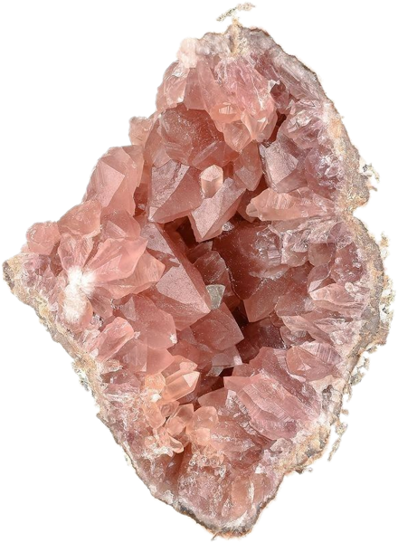
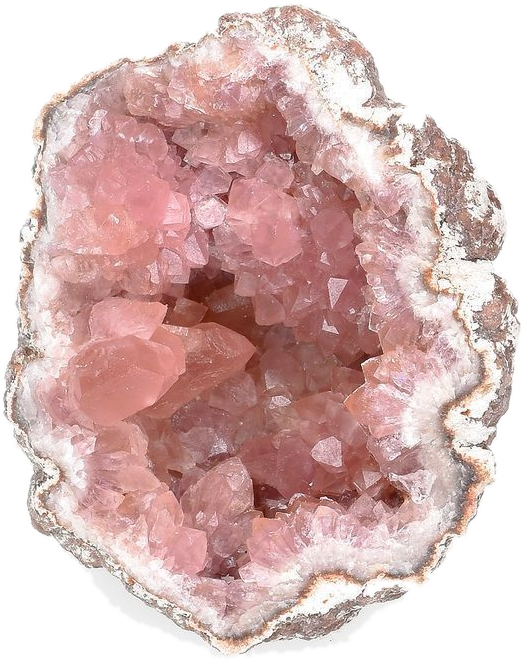

Crystal Garden
На данном сайте можно узнать о разных видах кристаллов: как они выглядят, какими свойствами обладают и откуда берутся. Также в разделе «Свойства» есть небольшая подсказка, которая поможет выбрать свой камень.
Смотреть каталог Как выбрать камень
Что такое Crystal Garden
Crystal Garden - это сайт про кристаллы и минералы. Сайт является справочником и позволяет посмотреть на различные камни и узнать о них что-то новое и полезное.
В каталоге собраны восемь камней: от нежного розового кварца до узорчатого малахита. У каждого есть описание, интересные факты и советы по уходу.
На странице «Свойства» можно прочитать, как формируются кристаллы, и подобрать камень по свойствам.
Открыть каталогЧто есть на сайте
Куда можно перейти с главной страницы.